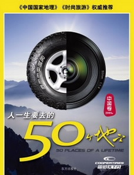

一、《人一生要去的50个地方——固铂天下行》
推荐指数：★★★★★

这本书被《中国国家地理》和《时尚旅游》权威人士的专业推荐。首先这本书是一家生产轮胎的厂商“全球替换轮胎专家固铂轮胎”（CooperTires）与《天下行》合作编辑而成。固铂轮胎厂商一直致力与越野与旅游类轮胎生产，并长期组织车队进行自驾游，所以具有实用性、专业性，另外加上与《天下行》合作，更是如虎添翼，是一本难得的可行性旅游书籍，故推荐为五星。
二：《中国自助游》
推荐指数：★★★★★

这本书以资深玩家标准，明确指点必游之处，打破旅游手册通通说好的惯例。1766处经典景点，149个旅游城市和景区，500条独具特色的个性线路，120条绝对经典线路。作为中国能一直畅销数年的旅游类书籍，绝对有它的独到之处，故也被评为五星。
作为连续6年中国最畅销的自助游手册，这本书以丰富的经验和遍布全国的报料网络，深切洞悉游者的好恶，在成千上万的去处中，以资深旅行家的体验，帮你明确判断每个景点是否值得前往，推荐那些被忽略的真正令人心动之处。我们更以本土美食家的标准，选择终身难忘的当地美食。我们更专注于令你的旅程每一天都有声有色。 一次有充足准备的美好旅行，足以提升你的口味、趣味和品位。一本好的旅行指南，就是一个好的开始……
三：《梦幻旅游——人一生要去的50个地方》中国卷
推荐指数：★★★★☆
世界是一本大书，那些从来没有旅行过的人仅仅读了这本书的一页。 在暗夜星空下如小精灵一般的萤火虫——这是关于乡村最美丽的幻想，而在婺源，还有着比幻想更美的景物。马头墙，雪白的墙身，青黑色的瓦，屋顶是刻着各式图案的飞檐翘角，直指苍穹，在蓝天绿树映衬下分外瞩目。
百年城郭→野外探险→人间天堂→阳光地带→文明奇迹五大主题，对中国各地的旅游景点进行阐述，但唯一的缺憾就是这本书较之上两本缺乏实践性，没有上两本具有更专业的实地考察性。但也不亏是旅游类的绝佳书籍，毕竟它在将中国旅游圣地归类做出了一定贡献。